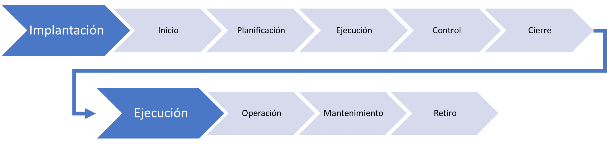
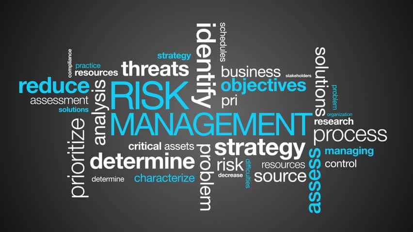

Seguridad en el diseño
Este es un concepto relativamente reciente usado sobre todo en el ámbito del desarrollo de aplicaciones, pero extrapolable a cualquier proyecto. Hasta ahora, las empresas desplegaban infraestructura basándose principalmente en el coste, sin incluir la seguridad entre sus requisitos. El primer error es entender el coste en TI como un gasto y no una inversión. El segundo es no planificar correctamente el ciclo de vida del proyecto incluyendo la seguridad desde el inicio.

Las fases de inicio y planificación son cruciales. En ellas se realizan: análisis del alcance, análisis de riesgos, estimaciones de coste y esfuerzo, y definición del plan del proyecto. La seguridad debe incluirse en el alcance como un requisito desde la concepción del sistema.

Análisis de riesgos
El análisis de riesgos identifica de qué amenazas protegerse, qué activos proteger y cuál es su valor. Las estrategias de respuesta ante riesgos son:

- Evitar: eliminar la amenaza cambiando el plan, como implementar un sistema que elimine el riesgo por completo.
- Transferir: trasladar el impacto a un tercero. Por ejemplo, llevar un servicio a la nube transfiere el riesgo de caída de hardware al proveedor.
- Mitigar: implementar una solución que reduce notablemente la amenaza, como un firewall de nueva generación.
- Aceptar: cuando el coste de las otras estrategias es inasumible, se acepta el riesgo y se crea un plan de respuesta para cuando ocurra.

Cisnes negros
El filósofo Nassim Taleb define un cisne negro como un suceso de gran impacto y totalmente improbable. Un ejemplo claro fueron los atentados del 11-S: varias empresas con oficinas en el World Trade Center perdieron todos sus datos porque no tenían centros de datos replicados ni copias de seguridad externas.

A partir de ese evento, muchas empresas empezaron a definir planes de recuperación de desastres y de continuidad de negocio. La pandemia de COVID-19 es otro ejemplo de evento que cogió a muchas empresas sin planes de teletrabajo seguros: más de 4 millones de ordenadores quedaron expuestos mediante acceso remoto sin protección adecuada, más de 37.000 solo en España.
Todo esto ocurre porque no se tuvo en cuenta la seguridad en el diseño del sistema desde el principio.